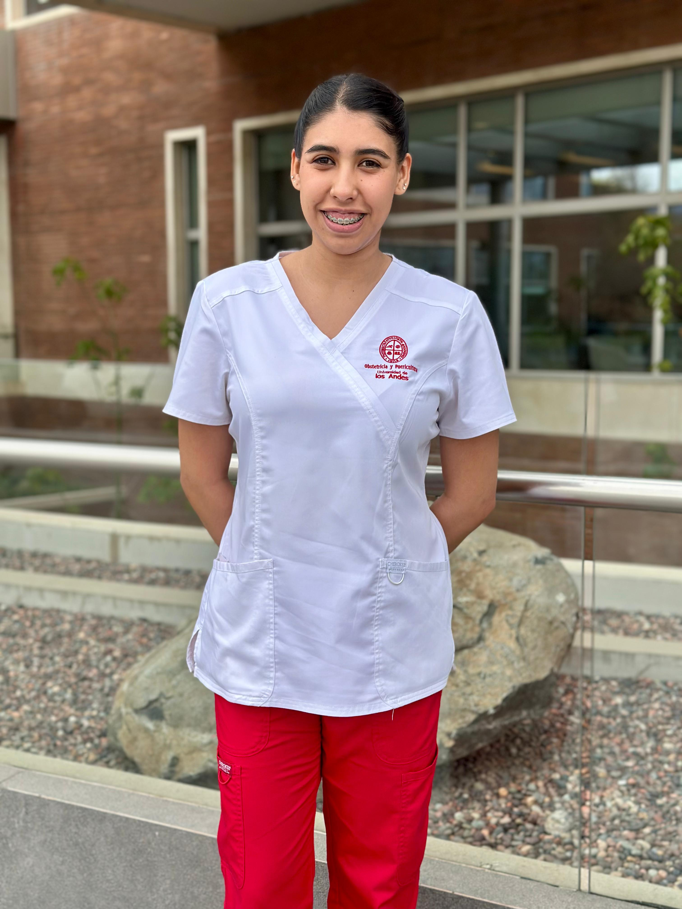
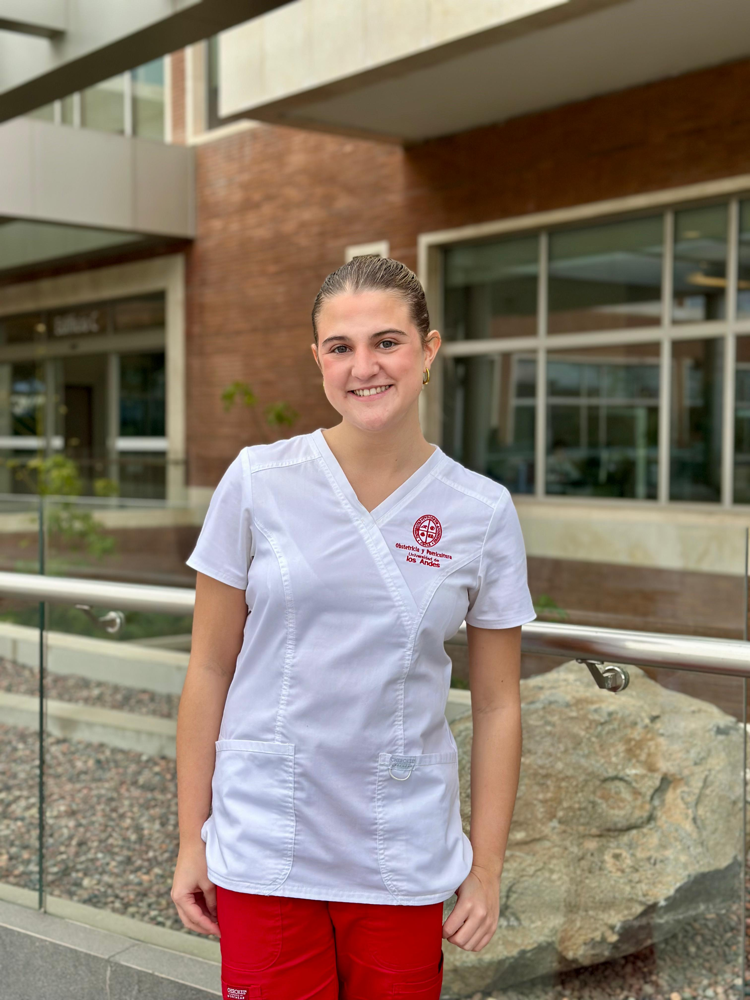

Educación digital · Postparto
Una plataforma educativa creada por estudiantes de Obstetricia y Puericultura de la Universidad de los Andes, pensada para acompañarte en los primeros días en casa junto a tu bebé.
Contenidos
Información confiable, actualizada y siempre disponible sobre los temas más importantes del período postparto.
Módulo 01
Aprende técnicas de amamantamiento, posiciones correctas y cómo resolver los problemas más comunes.
Módulo 02
Todo sobre higiene perineal, cuidados de episiotomía, herida de cesárea y características normales de los loquios.
Módulo 03
Reconoce las señales que requieren atención médica urgente para ti y para tu recién nacido.
Módulo 04
Guías oficiales, videos educativos y enlaces a organismos de salud confiables para seguir aprendiendo.
El equipo
Proyecto realizado en el marco de la Clínica Obstétrica – Puerperio, Universidad de los Andes 2026.
Obstetricia y Puericultura
Estudiante de obstetricia con enfoque en educación perinatal y cuidados puerperales.

Obstetricia y Puericultura
Apasionada por la lactancia materna y el acompañamiento integral de la mujer en el postparto.

Obstetricia y Puericultura
Comprometida con la salud digital y el acceso a información confiable para las familias.